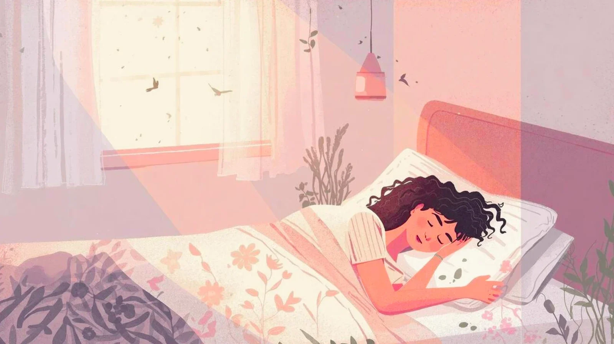
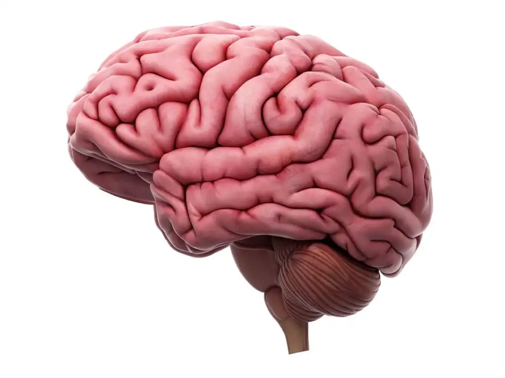

Introduction
Have you ever wondered why we spend almost a third of our lives sleeping? We usually think of sleep as the time when our body simply shuts down for a few hours. In reality, quite a lot is happening even when we are completely unaware of it. Our brain remains active, our body carries out important processes, and our memories are being organised.
Sleep is something everyone experiences, yet there is still a lot to learn about it. Think about those mornings when getting out of bed feels impossible, compared with the days when you wake up feeling refreshed. Sleep can influence how alert we feel, how well we concentrate and how easily we handle everyday tasks. Understanding the science behind it helps us appreciate why rest matters.

What Happens to the Brain During Sleep?
The Brain Does Not Switch Off
One of the most interesting things about sleep is that the brain does not simply stop working. Its activity changes as we move through different stages of sleep. Some stages involve slower brain activity, while others are associated with more active brain patterns. These stages repeat in cycles throughout the night.
During sleep, the brain also processes information gathered during the day. This is one reason sleep is important for learning and memory. Studying something and then getting enough rest can help the brain retain what was learned. Staying awake for longer does not automatically mean we will remember more.
Why Do We Dream?
Dreams are another fascinating part of sleep. They can include familiar people, strange situations and events that would never happen in real life. Dreams are especially vivid during REM sleep, a stage in which brain activity resembles some features of wakefulness. However, dreaming can also occur during other stages of sleep.
Scientists have proposed different explanations for why we dream, including possible connections with memory and emotions. There is still no single explanation that accounts for every dream. So, while a dream might feel meaningful, it does not necessarily predict the future or have a hidden message.

How Sleep Affects Everyday Life
Sleep is closely connected to our daily experiences. When we do not get enough rest, concentrating in class, remembering information and staying patient can become more difficult. We might also feel tired even when we have several things to finish. Getting sufficient sleep supports attention, learning, mood and overall health.
Our internal body clock, known as the circadian rhythm, helps regulate when we feel awake and when we feel sleepy. Light, daily routines and other environmental signals influence this rhythm. This is one reason having a reasonably consistent sleep schedule can be helpful.
Simple Habits That Support Better Sleep
- Try to go to bed and wake up at reasonably consistent times.
- Keep your sleeping space comfortable, quiet and dark when possible.
- Give yourself time to relax before going to bed.
- Avoid consuming caffeine close to bedtime.
- Put away distracting devices when they make it harder to settle down.
These habits may sound simple, but small changes to a daily routine can make it easier to get sufficient rest. Sleep needs also vary with age, so it is important to consider individual needs rather than comparing sleep schedules with friends.
How Much Sleep Do We Need?
Sleep requirements differ depending on a person's age. The following table gives general recommendations for common age groups. Individual circumstances can vary, and these figures are guidelines rather than exact rules for every person.
| Age Group | Recommended Sleep | Why It Matters |
|---|---|---|
| School-age children | 9–12 hours | Growth, learning and development |
| Teenagers | 8–10 hours | Memory, mood and development |
| Adults | Usually at least 7 hours | Attention, health and daily functioning |
For more science-related reading, visit NASA's introduction to science . You can also explore the National Heart, Lung, and Blood Institute's sleep information to learn more about sleep and health.
Conclusion
Sleep might look like the most uneventful part of our day, but science shows that it is anything but inactive. Our brain moves through different stages, processes information and supports functions that help us learn and manage our daily lives. Even dreams, which can seem random and confusing, remain an interesting subject of scientific research.
What makes sleep especially interesting is how something so ordinary can involve so many complex processes. We do not need a laboratory to notice its importance; we can often feel the difference between a refreshing night's sleep and a restless one. The next time we close our eyes at night, it is worth remembering that rest is not wasted time. It is one of the ways our body and brain prepare us for another day.